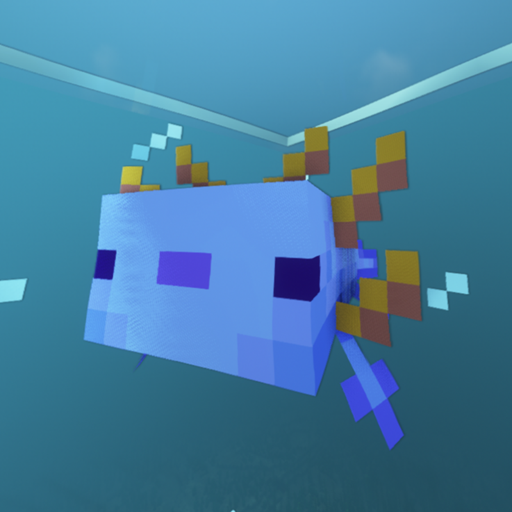

CraftersHub Resources
クラフターズのためのリソース置き場
このページは CraftersHub の共有静的アセットをまとめたものです。GitHub Pages から背景画像、アイコン、ファビコンなどを相対パスで配信でき、Cloudflare Tunnel の認証で使う `auth-error.html` も同じリポジトリに含まれています。
ここにあるファイルだけを GitHub Pages として公開すれば、CraftersHub のリソース配信・認証フォールバックがシンプルに運用できます。
Discord で話す使い方とアクセス
`assets/` フォルダ内のバイナリ（例: `./assets/craftershub-icon-192x192.png`）は GitHub Pages または Cloudflare Pages から直接参照できます。Tunnel 認証が必要な場合は `auth-error.html` にアクセスさせるだけで案内が完了します。
※ `auth-error.html` は認証に使うだけなので、アクセスできればそれで十分です。連絡先
最新情報やサポートは Discord に集約されています。リソースの追加や問題報告も Discord からどうぞ。
CraftersHub Discord へ